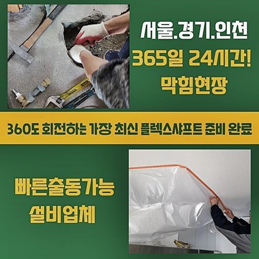
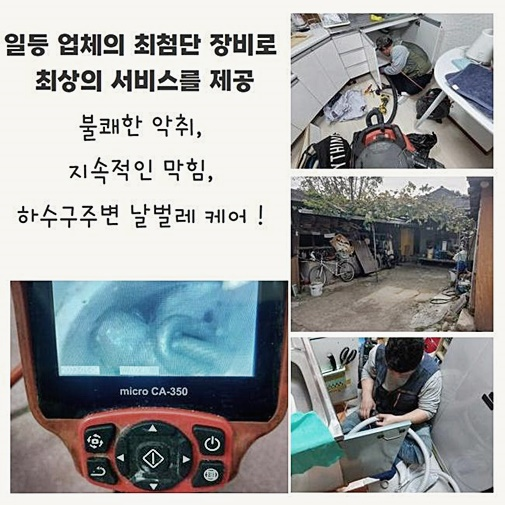
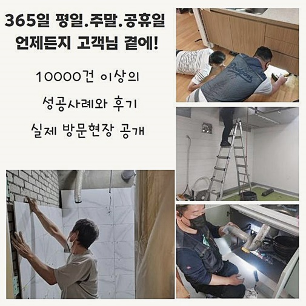
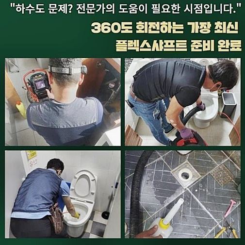
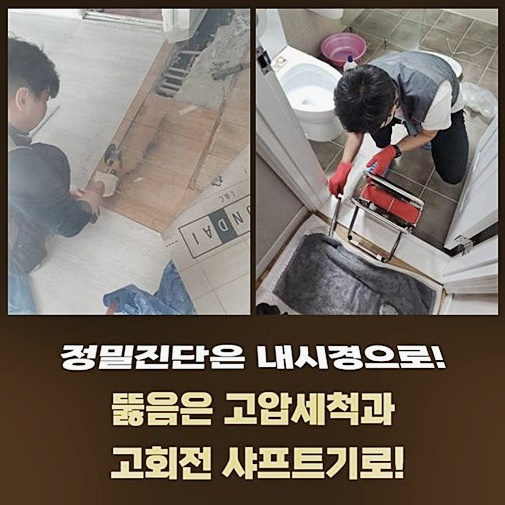

🏠 중구 삼각동변기역류 예장동 하수구뚫는비용 설비
용인 변기막힘 전문 시공 후기

📋 작업 개요
- 위치: 용인
- 서비스 유형: 변기막힘, 하수구막힘, 배관막힘, 역류해결, 뚫는업체, 배관청소, 고압세척, 설비공사
- 작업 일시: 2024. 8. 12. 11:58
- 업체명: 하수구수사대 (010-5615-2118)
🔍 문제 상황
중구 삼각동변기역류 예장동 하수구뚫는비용 설비
배수 장애의 증상들과 수준은 빌딩 구조나 쓰임새에 따라 다르게 나타날 수 있어요
확실히 가정집과 비교하면 식당 카페 등 상가 빌딩에서 배수관 막힘이 악화될 수 밖에 없어요
물론 빌딩의 준공 시기나 배관 케어를 해왔느냐에 따라서 차이점은 존재하므로 모두 일치한다고 이야기하는 것은 힘들어요
따라서 여러 가구에서 한번에 하수가 안빠지거나 계속해서 징후가 발생하면 반드시 배관수리 전문업체를 이용해 근원을 점검하고 막힘상황을 해결해야 합니다
금일 알려드릴 저희 전문업체가 도착한 장소도 상업 빌딩에서 일어난 문제였죠
지인을 통하여 우리 기사님을 추천 받았다 들었는데 툭하면 막힘 현상들이 출현하니 전문적인 방법으로 해결할 수 있는 전문가를 알아보고 계셨다고 하시더라구요
기술자가 방문하여 당시 현황을 점검해보니 빌딩 안에 입주 중인 많은 세대에서 일제히 물길이 막히고 있는 현상이 벌어지고 있었어요
상가건물이라서 운영중에 있는 매장들에서 물이 흐르지 않거나 흘러 넘치는 역류가 나타나고 있는 것으로 보였습니다
그렇지만 이와같은 배수로 막힘은 뜬금없이 나타나는게 아니므로 걱정이 되었습니다

🔎 원인 분석
💡 전문가 진단: 정밀 진단 장비를 사용하여 슬러지의 고착 여부를 판명하고 타격/세척 작업을 실시했습니다.
시작되고 나면 상태도 심각하고 화장실 막힘현상도 심하므로 뚫으려고 한다면 구체적인 해결법을 모색해야하는 상태였습니다
의뢰인께서 많은 이야기를 듣고 사전에 알아보셨는지 배수관로막힘을 책임지고 있는 저희업체에 하수관 고압수 클리닝을 실행하면 안되냐고 물어보셨어요
고압세척기구는 순간 아주 강한 압력을 가해 다량의 물을 배수구로 주입하여 하수관로 깊숙한 곳의 뭉친 찌꺼기들을 빼낼 수 있는 기구입니다
그런이유로 조건에 따라 올바르게 사용했을때 짧은 시간안에 막힘현상을 해결하는 것은 사실입니다
그러나 어디에서나 고압수 세척장치를 쓸 수 있는 건 아니라는 사실들을 기억해두셔야 해요
고압수 클리닝기기는 압력을 끌어올리는 동력기계와 연결이 필요해 작업여건이 알맞지 않은 곳에선 이용하기 힘들 수 있어요
또한 연립이나 아파트같은 거주지역에서는 하수관 고압수 클리닝보다는 이물질을 빨아들이는 석션장비 활용이나 플렉스샤프트기계를 활용한 분해와 청소 활동이 효과적일 수 있습니다
하지만 문제의 상가빌딩은 긴 시간동안 막힘이슈가 수차례 생겼났지만 알맞은 수리를 해오지 않아서 막힘 장애가 심각한 상황이었습니다
배수구 안에 슬러지덩어리가 계속해서 누적된다면 이 부분을 뚫는 과정도 쉽지 않지만 배수관로에 즉각적인 파손이 생길 수 있다는 사실이 더 큰 걱정이었습니다
음식점 또는 기름을 다량 사용하는 상가에서 방출되는 기름뭉치와 기름잔여물들은 장기간 배수관로 내에서 덩어리지면 그 지름이나 하중이 더해지는 사례가 흔해요
그래서 기름덩어리가 무더기로 축적될수록 배수관로가 무겁게 되어서 결합부위가 약해지거나 처지는 현상이 생길 수 있어요

🔧 작업 과정
먼저 배수구의 내 외관을 철저하게 확인해서 고압세척작업이 이뤄질 수 있는지 살펴본 후에 하수관로 세정작업을 시작하게 되었어요
접합부위를 세심히 살펴보니 배수파이프가 점차 처지는 현상도 있었지만 해당현상은 불순물을 없애준다면 원상복귀될 것으로 생각하여 헐거워진 위치만 금속밴드로 고정해주었습니다
이와 같이 사전에 예비 단계를 진행하지 않고 고압수를 넣어주면 배수파이프에 균열이 생길 수 있으므로 더 심한 문제점이 나타날 수 있어요
고정시키는 일을 마무리하고 이제는 청결한 세척작업을 시작해야하기 때문에 하수관로 내시경장치를 투입할 준비를 마쳤습니다
공동관로가 매우 길게 연결된 상태라서 배수구전용 카메라로 배수관 안쪽을 탐지하는 시간이 많이 걸렸어요
그렇지만 배수파이프 정비에서 핵심이 되는 단계가 정확하게 진단을 통해 이유를 파악해 나가는 것이므로 내시경을 통한 확인작업을 등한시하면 안됩니다
고압 물세척을 깔끔하게 하기 위해 하수도 내시경카메라를 배관 깊숙한 지점까지 접근시켜 공용파이프를 면밀히 점검했습니다
배수구 내부 유지관리가 적절하게 되지 않아서 깊은 내부까지 슬러지덩어리가 가득한 상태를 관찰하게 되었습니다
하수관로를 뚫는 저희 팀은 이러한 상태라면 고압수 클리닝기구를 이용해서 수리를 하는 것이 맞다는 판단을 하였습니다
이와 같은 상가 지하에 위치된 공용배수라인은 길이가 긴 사례가 대다수이기 때문에 중간쯤의 위치에서 일단 청소를 해준 후 보강처리를 하는 것이 효율이 높습니다
이와 같이 정밀하게 배수관 속의 상황이나 연결 체계를 알아낸 후 시공을 해야 확실히 막힘문제를 처리할 수 있습니다
이런 방식이 아닌 임시 조치로 장애상황을 해결하고 나면 증세는 진전되지 않고 또 관로막힘이 나타나는 상황들이 반복될 뿐이죠
이번엔 고압수 세척장비를 적용해서 철저하게 하수도 클리닝을 진행할 시간입니다
문제의 근원이 되는 영역을 확인했기 때문에 고압수 클리닝이 완벽하게 끝나게되면 불편함없이 물을 편히 이용할 수 있으실 거예요
고압세척의 경우 찰나에 대량의 물이 물들이 배수관로 안쪽으로 넣기 때문에 전문인력의 능력이 요구되는 작업입니다
고압수 세척을 수행하면서 내시경장비를 활용해서 깔끔하게 오물이 청소되고 있는지도 살펴보았습니다
고압세정작업을 마친 후 내시경장치로 안쪽 현황을 점검한 다음 배수검사까지 수차례 시행했는데요 막힘이슈 없이 가득부은 물이 원활하게 흘러가는 상황을 점검을 하며 알 수 있었어요


✅ 작업 완료
하수도 막힘들을 책임지는 우리업체는 고객께 세부적인 현장사항을 말씀드리고 중앙에 공사를 진행한 지점도 마무리 지은 다음 시공을 끝낼 수 있었어요
이렇게 상가에서 막힘 현상이 발생하면 난처한 상황이 생기므로 즉각적인 대응이 필수적입니다
이젠 많은 고민이나 염려를 접어두시고 저희업체에 연락해주세요
미미한 증상들을 방치한다면 더 커다란 문제로 발전될 수 있으므로 빠른 진단으로 정확하게 처리하겠습니다
그 어떤 수리공보다 신속 정확하게 배수 장애를 해결해드리겠습니다



⚠️ 하수구 배관 막힘 예방 및 관리 가이드
- ✅ 머리카락, 비닐, 물티슈 등 물에 분해되지 않는 이물질은 하수구 유입을 절대 금지해 주세요.
- ✅ 하수구 거름망을 씌우고 모여진 이물질은 주기적으로 쓰레기통에 바로 비워주셔야 합니다.
- ✅ 배관 노후가 심할 경우 이물질이 더 쉽게 걸리므로 주기적인 배관 세척(고압세척 등)을 권장합니다.
- ✅ 작업 후 1년 이내 재발 시 하수구수사대에서 무상 A/S 보증 서비스를 제공합니다.
💡 핵심 정리
- 확실한 장비 작업(내시경 점검 및 샤프트 스케일링)으로 원인을 뿌리 뽑습니다.
- 작업 후 1년 이내에 동일한 부위 재발 시 100% 무상 A/S 서비스를 보장합니다.
- 서울 · 경기 · 인천 전 지역에 24시간 언제든 긴급 출동할 수 있도록 항시 대기 중입니다.
❓ 자주 묻는 질문 (FAQ)
🚨 용인 변기막힘 문제로 고민이신가요?
정확한 원인 진단과 확실한 시공으로 재발 없는 해결을 약속드립니다.
24시간 긴급 출동 | 서울 · 경기 · 인천 전지역 | 1년 내 재발 시 무상 A/S